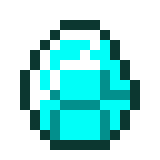

<div id="footLine"></div>
<script type="text/javascript" src="scripts/main.js"></script>
<div id="footer" >
	<span class="link">	
		<div id="footToTop" class="jump" href="#divmain">
				
			<span id="pToTop">一番上にいく</span>
		</div>
	</span>
	<span class="link">	
		<div id="footToIndex" onclick="location.href='index.html'">
				
			<span id="pToTop">トップページにいく</span>
		</div>
	</span>
</div>	


